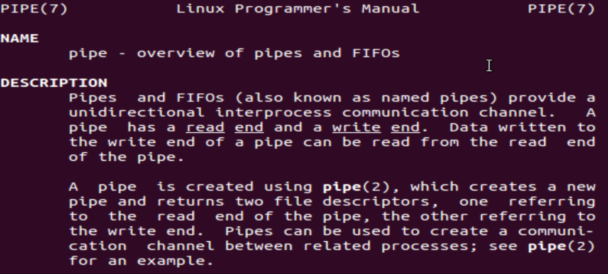

What is pipe
Overview of pipes
Read the pipe manual pages in section 7 use the commandman. Note that you do not need to read the part related to FIFO.
In the terminal, type
$ man 7 pipe

When you read the manual page, try to answer the following questions.
Q1: Is pipe bidirectional or unidirectional?
Q2: Is pipe used to create a communication channel between related processes or independent processes?
Q3: How does pipe synchronize read and write operation? (eg: If a process attempts to read from an empty pipe, what will happen?)
Q4: The communication channel provided by a pipe is a byte stream: there is no concept of message boundaries. How to let the reader know end-of-file?